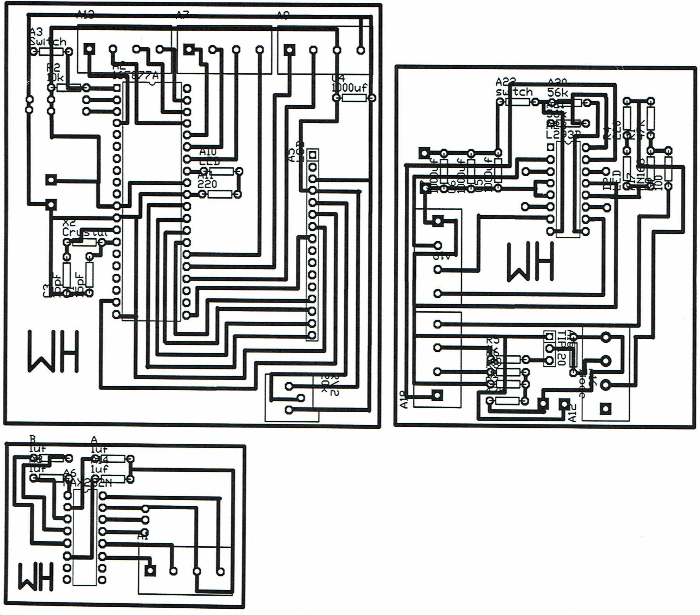

FireFighter Bot

The FireFighter bot has the ability to navigate around a 4 room maze, locate a flame (created by a candle) and blow it out. Softwares that were used include TraxMaker 3 pro and MicroCode Studio.
My partner and I created this project during our grade 12 year at Sir John A. Macdonald S.S in Computer Technology (TEJ4UI). In this course we were given minimal guidance in order to teach us the importance of being resourceful and developing longterm troubleshooting skills.
Three seperate circuit boards were constructed for the firefighter bot. The smallest board was for bootloading the program from our computer into the microchip. The second board was for the motors and fan that hangs off the top of the robot. The last board contained all of the sensory including line, wall and flame.
During the construction of this project my partner and I ran into many problems. The initial design of our circuit boards did not work delaying our progress in the completion of the project by the deadline. We used multimeters to measure the different voltage drops, ensure that everything was connected properly as well as to make sure that there were no floats throughout the boards. We used a lot of our time after school to get back on track creating new designs and continuously testing to get a final working product.
Below is an image of our cicuit board designs. 
The Final program can be found here and our initial designs for the firefighter can be found here